日本とインドネシアの高校生が、半年間オンラインでジャカルタの観光を一緒に調べ、現地を歩いて改善案を発表
東京女子学園中学校高等学校（芝国際中学校・高等学校）の高校1・2年生25名と、インドネシア・ボゴールの SMA Dwiwarna の生徒21名が、7つの混合チームで「ジャカルタ観光・魅力探究プロジェクト」に取り組みました。2025年10月から月1回のオンライン協働でジャカルタの観光地の魅力と課題を調べて改善の仮説を立て、2026年5月には日本の生徒18名が現地を訪問。4日間、両校の生徒が一緒に観光地を歩き、最終日に改善案を英語で発表しました。
企画協力
日本・東京
東京女子学園中学校高等学校
（芝国際中学校・高等学校）
高校1・2年 25名
（うち18名が現地訪問）
＋現地4日間 時差2時間
インドネシア・ボゴール
SMA Dwiwarna
高校1年 21名
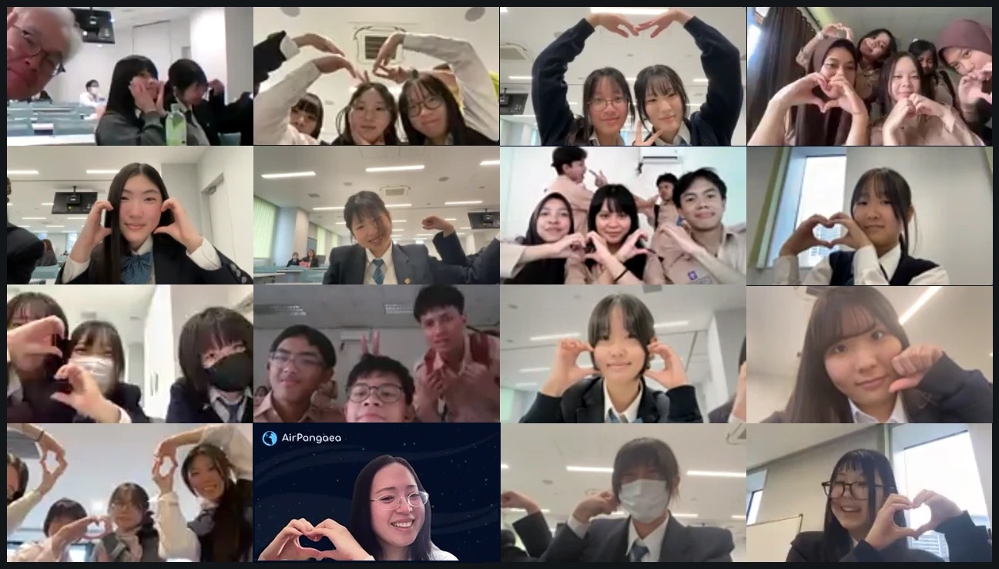
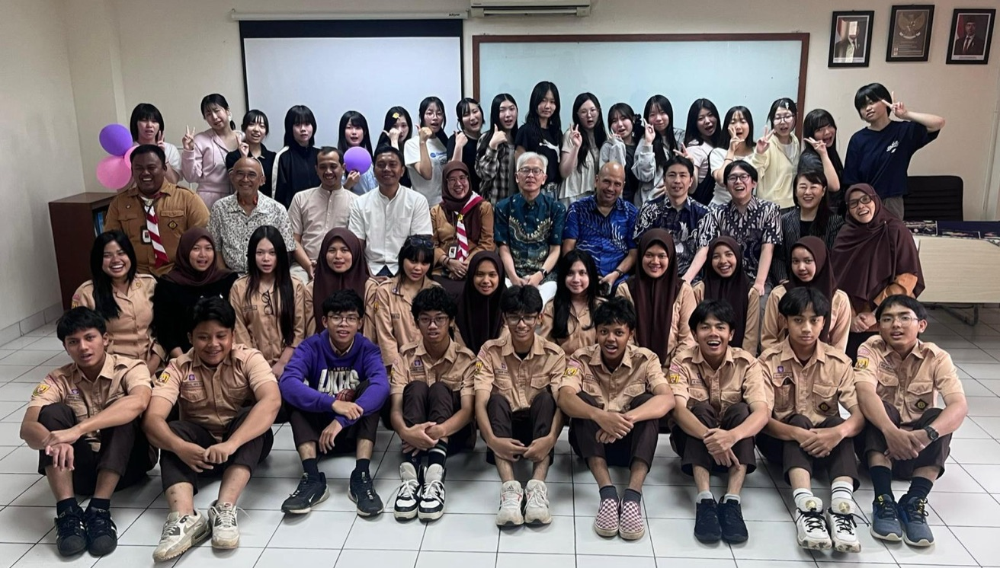
- プロジェクト名
- ジャカルタ観光・魅力探究プロジェクト（Discover Jakarta Project）
- 実施校
- 東京女子学園中学校高等学校（芝国際中学校・高等学校）高校1・2年
- 海外協力校
- SMA Dwiwarna（インドネシア・ボゴール／ジャカルタ首都圏の全寮制高校）
- 実施期間
- 2025年10月〜2026年5月
オンライン：2025年10月30日〜2026年4月30日（全6回、木曜6限）
現地：2026年5月11日〜14日（4日間） - 参加生徒
- 日本 25名（うち18名が現地訪問）／インドネシア 21名
両国混合の7チーム - 訪問先
- Kota Tua（旧市街）、Ancol Dreamland (Dufan)、ボゴール宮殿・植物園、SMA Dwiwarna
- 形式
- オンライン＋現地訪問
- 使用ツール
- Zoom（ブレイクアウトルーム）、Padlet、Google スライド（グループ別ワークシート）、Canva（発表スライド）
背景
東京女子学園では、2023・2024年度に、DSDA* の授業で SMA Dwiwarna とのオンライン交流 TOMODACHIプログラムに取り組んできました。2025年度は、この交流を一歩進め、オンラインで一緒に考えたことを、現地を訪ねて確かめる協働学習として企画しました。
*DSDA は、データサイエンス・デザイン&アーツの略で、東京女子学園中学校高等学校（東京都港区）が2020年度から導入している独自の情報・探究カリキュラムです。
テーマは「ジャカルタ観光・魅力探究」。ジャカルタは東京と並ぶ大都市ですが、インドネシアの観光地としてはバリ島やボロブドゥール遺跡に比べて印象が薄いと言われます。高校生の目で街の魅力を見つけ、どうすればもっと訪れたくなる場所になるかを、日本とインドネシアの生徒が一緒に考えることにしました。
協力校の SMA Dwiwarna は、ジャカルタ首都圏のボゴールにある全寮制の高校です。生徒はインドネシア各地から集まって寮で暮らしており、ジャカルタの観光地に必ずしも詳しいわけではありません。そのため、インドネシアの生徒が案内役になるのではなく、両国の生徒が同じ立場で調べる側に立つことができます。訪問先には、ジャカルタの観光地に加えて、SMA Dwiwarna の提案を受け、学校のあるボゴールの宮殿・植物園も入れました。
実施内容
チームづくりとオンライン協働（全6回）
日本の生徒3〜4名とインドネシアの生徒3名で、6〜7名の混合チームを7つつくりました。各回のセッションは日本の木曜6限（14:20〜15:10、ジャカルタは12:20〜13:10）に行い、日本側は前の5限を準備にあてています。
各混合チームには、Google スライドのワークシートを用意しました。ワークシートは、回ごとに何を話し合い、何を書き込むかをあらかじめ設計してあります。両国の生徒は事前にそれぞれ調べて書き込み、当日は画面を共有しながら英語で説明し合います。
-
Day 1
チームビルディング（2025年10月30日）
初めての顔合わせです。1対1の会話を相手を替えて2回行い、グループ対抗のゲーム（共通点探しと、身の回りでいちばん古い物を探して見せ合う）で打ち解けました。
-
Day 2
訪問候補地を絞る（11月27日）
両国の生徒が「ジャカルタやボゴールで行ってみたい場所」を写真付きでオンライン掲示板（Padlet）に投稿し、チームで話し合って3か所に絞りました。各チームの希望をもとに、先生方・旅行会社と相談して、全員で訪れる4か所を決めています。
-
Day 3
魅力と課題を知る（2026年1月29日）
決まった4か所について、「誰にとって、なぜ魅力なのか」「どんな課題が、どの程度あるのか」を、できるだけ数字と出典を添えて調べ、共有しました。そのうえで、現地で確かめたい観点（アクセス、混雑、案内表示と言語、支払い方法、安全・清潔さ、写真映えなど）を、訪問先ごとに3〜5個決めます。
-
Day 4
改善の仮説を立てる（2月12日）
観点ごとに調べた発見をもとに、訪問先をより魅力的に、訪れやすくするための改善案を出し合い、「どうすれば、どれくらい良くなるか」まで考えて、現地で確かめられる仮説にまとめました。
-
Day 5
現地のチェックリストをつくる（4月16日）
訪問先ごとに「何を・どうやって確かめるか」を整理し、現地で使うチェックリストのもとをつくりました。
-
Day 6
発表の下書き（4月30日）
Canva でチームの発表スライドを共同編集し、1枚ずつ内容を確かめました。現地での発見を書き込む欄は空けたまま、渡航します。
Day 1・2 は、ゲームや行きたい場所の紹介など、雰囲気でも楽しめる交流が中心でした。Day 3 からは、調べたことを英語で説明し、相手の説明を聞いてすり合わせる議論に変わり、難しさが一段上がります。画面越しに、英語で、相手の考えを確かめながら一つにまとめていくのは簡単ではなく、多くのチームが苦戦しました。それでも、オンラインで海外の相手と物事を進める経験は、これからの社会で珍しいものではなくなります。AirPangaea は、この難しさを乗り越えること自体に意味があると考え、つまずいているところを支えることにしました。
Day 5 の前には、多くのチームでチェックポイントの欄が埋まりきっていませんでした。そこで、よく議論できていたチームのワークシートを訪問先ごとに整理した資料と、チェックリストの記入例を日英で作成して配り、「欄が埋まっていなくても、課題と改善案を確かめるための観点を考えればよい」と伝えています。各チームが自分たちの議論をもとに書けるよう、記入には書いた人のイニシャルを添えてもらいました。オンライン期間の終わりには、どのチームも少しずつ、現地で自分が何を確かめるのかを思い描き始めていました。
オンライン期間の途中には、インドネシア出身の先生、AirPangaea の留学生、現地の大学生をゲストに招き、日本語でジャカルタの暮らしや訪問先の見どころを聞く特別セッションも行いました（2月26日）。
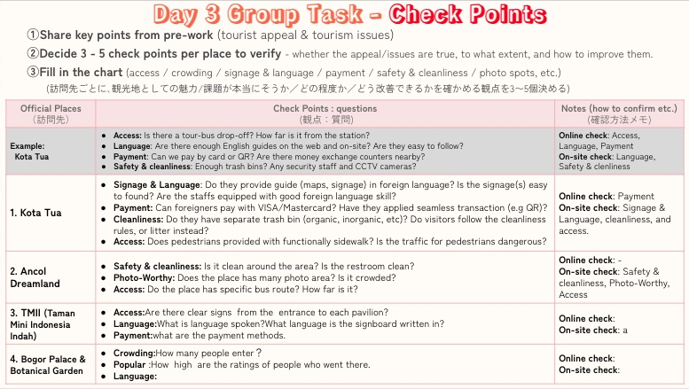
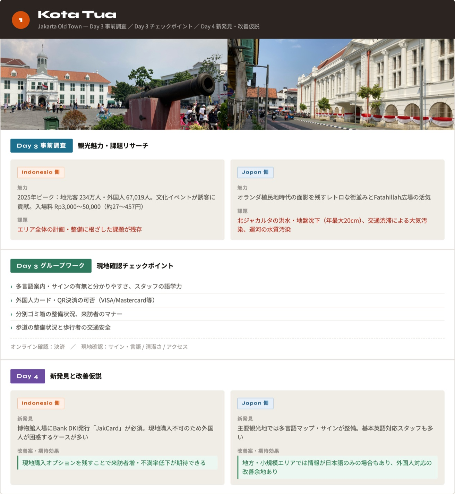
現地での4日間（2026年5月11日〜14日）
*現地4日間の様子は、AirPangaea の Instagram（ハイライト「ジャカルタ探究」 ）でも動画で紹介しています。
）でも動画で紹介しています。
-
Day 1
ジャカルタの観光地を歩く（5月11日）
朝、旧市街の Kota Tua で、半年間オンラインで話してきたチームの仲間と初めて対面しました。画面越しには知っている相手でも、実際に会うと少し緊張した様子でしたが、チェックシートを手に一緒に歩くうちに、会話が増えていきました。両校の生徒は終日同じバスで各訪問先を巡り、Ancol Dreamland (Dufan) では、各チームに先生が1人ずつ付き添い、3時間のフィールドワークを行いました。予定していた TMII（Taman Mini Indonesia Indah）は、強い日差しの中で疲れの見える生徒もいたため、先生方と相談して安全を優先し、バスの車窓から見るだけにしました。
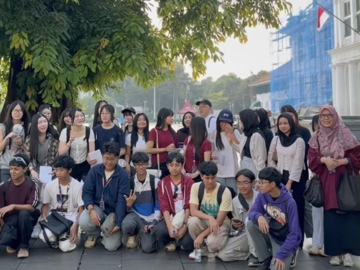
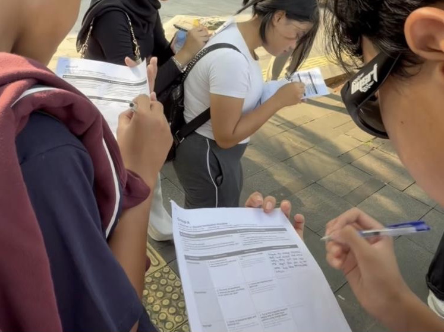
左：Kota Tua で、初めて対面した両校の生徒 右：現地チェックシートに書き込む両校の生徒

-
Day 2
SMA Dwiwarna での1日（5月12日）
前日より打ち解けた雰囲気の中、日本の生徒にとっては、寮で暮らす同世代の学校生活を間近に見る1日になりました。校長先生・副校長先生への挨拶の後、日本の生徒は校内を見学し、英語で行われる授業3つに分かれて参加しました。協働学習では、前日のフィールドワークの気づきをチームで共有し、発表に書き込む部分を決めたうえで、ボゴール以外の部分の発表の骨組み（題名、構成、担当）をつくりました。


左：SMA Dwiwarna の校内を見学する日本の生徒 右：授業体験の一場面
-
Day 3
ボゴール宮殿・植物園（5月13日）
午前は学校近くのボゴール宮殿・植物園を両校の生徒で歩きました。その後、現地のイオンモールでグループごとに散策して昼食をとり、学校に戻って発表の仕上げに取り組みました。日を追うごとに打ち解け、両国の生徒が意見を出し合いながら、担当を分けて準備を進めています。担当部分を仕上げて3回練習してくることが、翌日までの課題です。

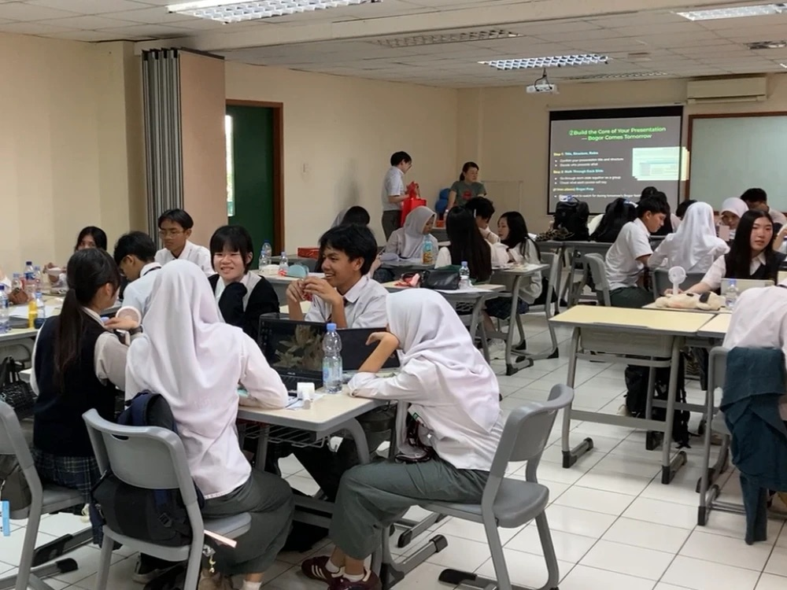
左：ボゴール宮殿の前で 右：協働学習で発表を準備する両校の生徒
-
Day 4
最終発表とお別れ（5月14日）
7チームが英語で発表しました（各チーム発表10分・質疑2分）。発表ごとに質問役のチームを決め、会場の生徒が質問を投げかけます。ゲストに招いたジャカルタの旅行会社の経営者から講評をいただき、SMA Dwiwarna の校長先生の挨拶の後、両校で集合写真を撮りました。最後はチームごとに昼食をとり、学校の玄関で SMA Dwiwarna の生徒たちに見送られて別れました。その場で涙を流すチームも少なくありませんでした。

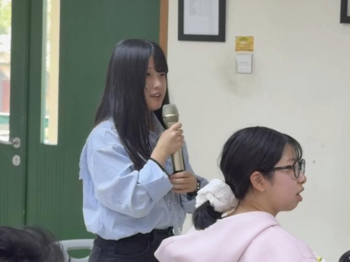
左：最終発表を行う両校の生徒 右：質疑で、会場から質問する日本の生徒
生徒たちが考えたこと
7チームの発表は、「チーム紹介」「日常の会話で見つけた両国の共通点と違い」「訪問先ごとの魅力と課題」「仮説・発見・提案」「結論」の流れでまとめています。
日常の会話から見つけた、両国の共通点と違い
家族を大切にすることや、米が主食であることを共通点に挙げたチームが多くありました。違いとしては、週末の過ごし方、味付けや食べ方、四季の有無、1日5回の礼拝やラマダン、ごみの分別、トイレットペーパーを使わない習慣などが挙がっています。
オンラインで調べ、仮説を立てたこと
半年間のオンライン協働では、どのチームも訪問先の来訪者数や料金、口コミを調べ、課題として「週末や休日の混雑と渋滞」「建物や設備の老朽化」「ごみと清潔さ」「外国人にとって分かりにくい案内表示」などを挙げました。Kota Tua の博物館は、プリペイドカード（JakCard）がないと入れず、窓口で入場券を買えないことを調べたチームは、外国人旅行者のために当日券の窓口を残す案を出しています。
現地で歩いて、感じたこと
現地では、日本の生徒が「自分の当たり前」が通じない場面に何度も出会いました。
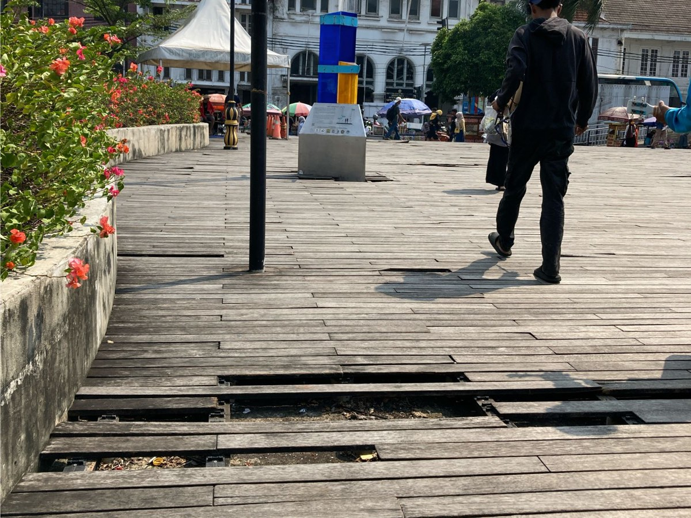

左：板が一部割れた Kota Tua の木の橋 右：Ancol Dreamland (Dufan) の広い園内を歩くチーム
- 強い日差しと暑さで体力を奪われる。日本のテーマパークには、待ち列の日よけや水のシャワーなど、意識してつくられた暑さ対策がある
- 広い園内に紙の地図がなく、どこに何があるか分かりにくい。案内は英語まではあっても、それ以外の言語がない
- 来場者のほとんどがインドネシアの人で、外国人旅行者はまだ少ない
- トイレに紙がない、床や便座が濡れている
- 木の橋の板が一部割れていて、歩くと危ない
あるチームは、訪問先を「行く前」と「行った後」の2枚で比べ、混雑やごみを予想していたのに対し、実際に戸惑ったのは英語の案内や地図の少なさだったと発表しました。木の橋の割れ目には、両国の生徒がそろって「観光地としてよくない」と感じていました。一方で、インドネシアの生徒にとっては見慣れた光景に日本の生徒が驚く様子を見て、「日本の人はそう感じるのか」と気づく場面もありました。
改善の提案
発表では、次のような提案が出ました。
- 待ち列の日よけ、屋内の涼しい休憩所、給水所など、暑さへの対策
- 多言語の紙の地図とパンフレット、分かりやすい案内表示、QRコードで読める解説
- オンライン予約と、混雑する時間帯の表示
- 清掃員とごみ箱を増やし、傷んだ通路や設備を直す
- 露店の配置を整理し、SNS で魅力を発信する
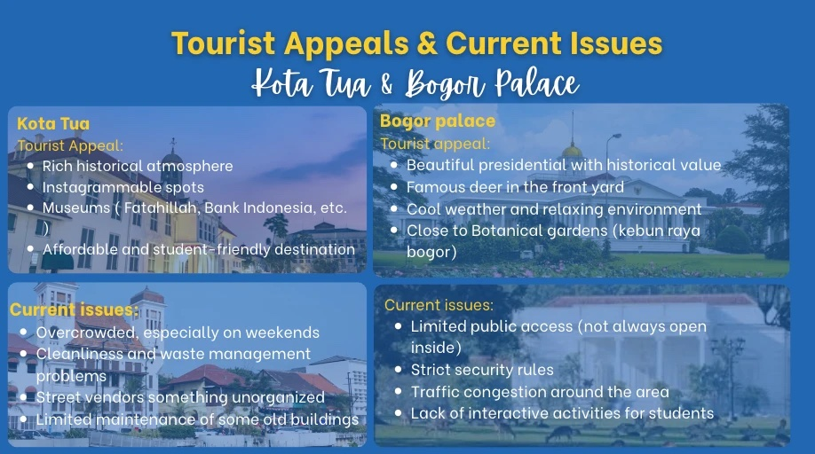
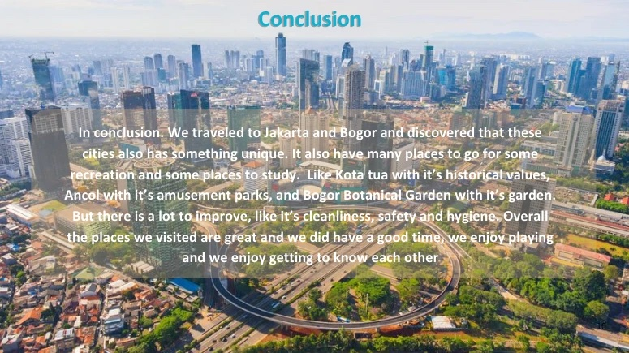
ゲストの講評
最終日の発表会には、ジャカルタの旅行会社の経営者をゲストに招き、講評をいただきました。講評では、ご自身が日本を訪れた際の経験を例に、外から来た人の視点の大切さが説明されました。日本の満員電車を見て「何とかすべきだ」と感じた一方、日本の人々はそれを当たり前のこととして受け止めていたそうです。地元の人には気づきにくいことも、外から来た人の視点によって見えてくるという話です。また、インドネシアの生徒たちの意見も、高校生ならではの新鮮な視点として評価されました。
そのうえで、「実際のビジネスでは定量的に考えることが大切。どう人の流れをつくり、人を集め、心に届け、どれだけのインパクトを生むかという視点を持ってほしい」と次の課題をいただき、数字で分析を示したチームが評価されました。日本語の案内板を増やす提案には、費用に見合う効果があるかという観点からの指摘もありました。講評は英語だったため、AirPangaea が要点を日本語で補っています。
先生の声
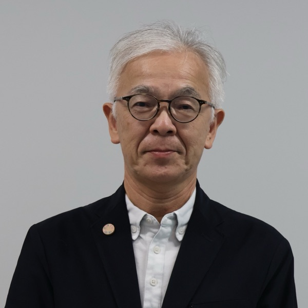
東京女子学園中学校高等学校（芝国際中学校・高等学校）
英語科／探究学習指導担当 唐澤 博 先生
探究学習では、知識を得るだけでなく、生徒が自分で調べ、話し合い、確かめる仕組みをどうつくるかが大切だと考えています。今回のプロジェクトでは、半年間オンラインでインドネシアの生徒と一緒に調べて仮説を立て、それを現地で自分の目で確かめ、最後に英語で発表するところまでを、生徒たちが一つの流れとして経験しました。
観光という一見扱いやすそうなトピックでしたが、英語がお互いの母国語ではなく、事前のオンラインでの意見交換だけでは難しかった意思疎通が、実際に会うことで、価値観の違いだけでなく同じ考えも共有・体感でき、異文化交流の新しい取り組みとなったと思います。
教室の中だけでは出会えない問いに、海外の仲間と一緒に向き合う。その経験そのものが、生徒にとって大きな学びになったと感じています。
先生方との役割分担
AirPangaeaが担当
- 海外協力校との企画の調整
- テーマと、オンライン6回・現地4日間の学習の流れの設計
- グループ別ワークシート、発表テンプレートの作成
- 各チームが考えたチェック項目とこれまでの調査を生成AIで整理し、チームごとの現地チェックリストに仕上げる
- オンラインセッションの進行と言語サポート
- 現地での協働学習と最終発表会の進行、講評ゲストの手配
- 保護者説明会での実施内容の説明
先生方にお願いしたこと
- 生徒の選考とチーム編成
- 授業時間の確保と、各回の前後の準備・振り返りサポート
- 校内での実施調整と、修学旅行へのプログラムの組み込み
- 保護者説明会の準備・実施と、保護者への説明・理解促進
- 現地での引率と行程の判断、フィールドワーク中の各チームの見守り
渡航の行程、宿泊、移動は旅行会社が担当し、現地の動きは、学校・旅行会社・SMA Dwiwarna と AirPangaea の4者で調整しました。
課題
調査を深め、提案につなげる
オンライン期間中は、調べた情報を集めるだけでなく、そこから考察を深め、具体的な提案につなげるところに難しさもありました。
限られた授業・準備時間の中で学びを深めるには、オンラインで議論する機会に加えて、学校内での準備時間の確保や、各チームが調査・議論を継続的に深められる環境づくりも欠かせません。学校の先生方と相談しながら、AirPangaea としても支え方を工夫していきます。
また、オンラインの段階から数字と出典を添えて調べるよう設計していましたが、調べた数字を、課題の大きさや提案の効果を考えるところまでつなげられたチームは一部でした。講評でいただいた「定量的に考える」という視点を踏まえ、数字をもとに考える手順を、オンラインの段階からより具体的に組み込んでいきます。
現地行程に柔軟性を持たせる
現地でのフィールドワークでは、予定していた訪問先を時間内に回れるかだけでなく、暑さや生徒の疲労も考慮する必要がありました。今回は当日の状況を踏まえ、先生方と相談してTMIIを車窓からの見学に変更し、安全を優先しました。
今後の行程づくりでも、訪問先の優先順位を踏まえ、天候や生徒の様子に応じて見学方法を柔軟に調整できるようにしてまいります。
お問い合わせ
本事例や AirPangaea のプログラムについて、ご不明な点やご相談がございましたら、お気軽に以下よりお問い合わせください。
お問い合わせ